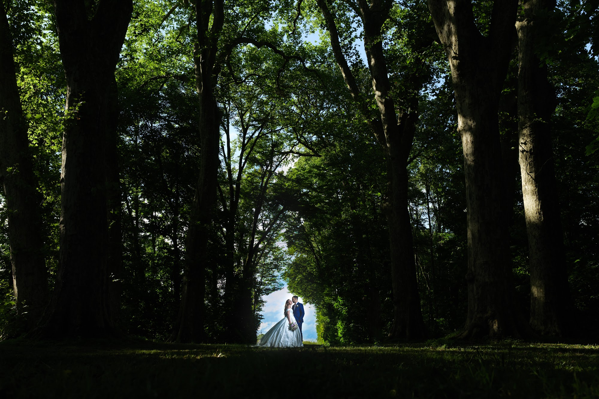
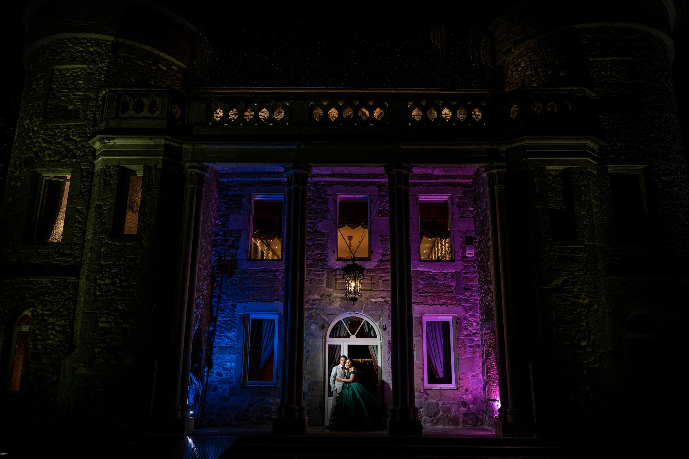
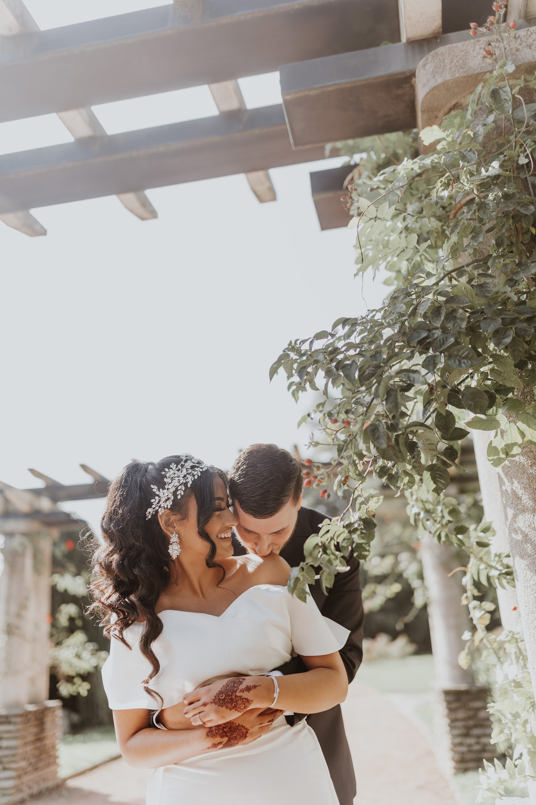
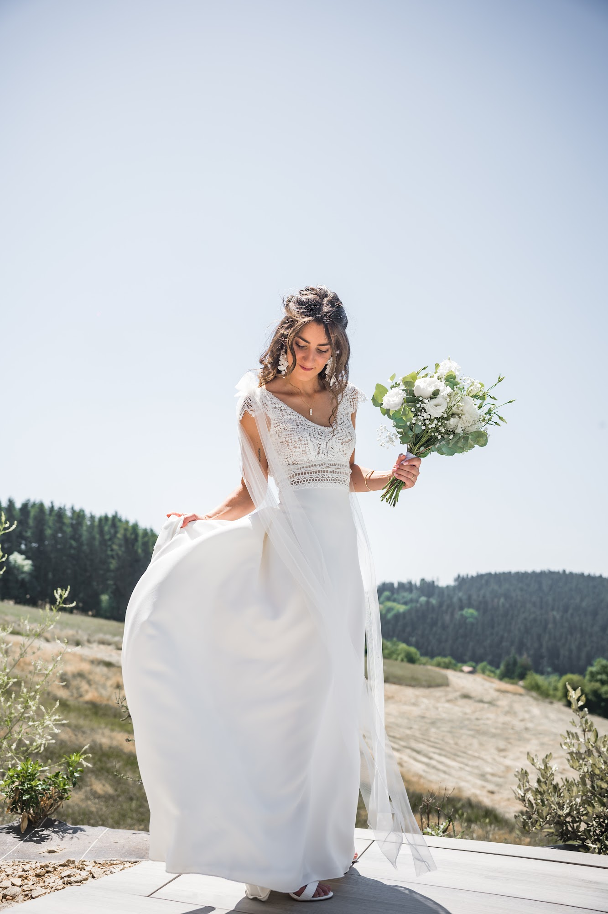
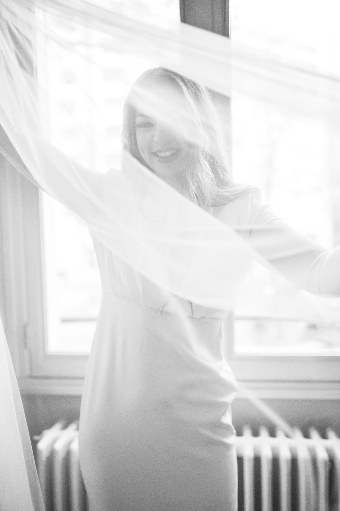
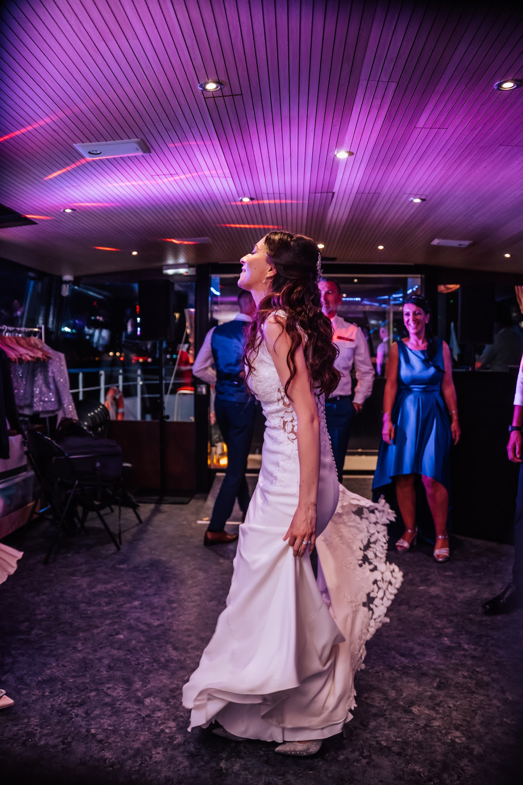

Finding the perfect wedding venues near Lyon, France: chateaus, estates and lakes
The search for wedding venues near Lyon, France often marks the true beginning of your planning process. It sets the tone for the entire day, dictates the flow of your celebration, and shapes the light in your photographs. As a photographer and videographer, I constantly observe how a space influences the energy of a reception and the way people interact.

The timeless elegance of a French chateau
History echoes within the thick stone walls of the great estates in our region. Choosing a classic chateau means opting for an elegance that stands the test of time. I particularly love the contrast between classical architecture, with its high ceilings and intricate moldings, and the very lively energy of a modern celebration. The large windows of these historic buildings let in a soft, directional light that is perfect for the quiet morning preparations.
The main courtyards provide a natural, majestic setting to welcome your guests for the cocktail hour. The crunch of footsteps on the gravel, the wind in the ancient trees of the property, everything contributes to a soothing atmosphere. The spaces are vast, allowing everyone to find their place without ever feeling crowded. In the evening, the illuminated facade becomes a sumptuous backdrop for a few night portraits.

Rustic charm and local estates

If you are looking for a warmer, more rustic spirit, exposed stone and solid wood beams have a lot of character. Many rural estates blend seamlessly into the countryside, sitting at the end of a long driveway or at the top of a hill in the Monts d'Or. These places breathe conviviality and simplicity. Renovated old barns offer generous ceiling heights and warm acoustics for dinner.
It is the kind of setting that invites total relaxation. Guests easily wander between the inner courtyard and the lush gardens. At the end of the day, the stone captures the heat of the sun and reflects a very flattering glow for couple portraits. I guide you through these spaces fluidly, using the natural textures of wood and mineral as a backdrop for your images.
Celebrating among the Beaujolais vineyards

Further north, the rolling landscapes offer a massive breath of fresh air. Organizing a wedding in the Beaujolais allows you to enjoy the famous golden stone that characterizes the region so well. It is a mineral that literally catches fire during the golden hour, the hour just before sunset. Wine estates often have large terraces overlooking the vineyards, offering an unobstructed view that gives a beautiful sense of freedom.
The atmosphere there is epicurean, deeply rooted in the earth and the sharing of good food. Long outdoor tables naturally find their place on warm summer evenings. It is an environment that calls for movement, spontaneous laughter, and glasses clinking under string lights. The evening breeze playing with the fabric of your outfits amidst the vines creates a dynamic motion that I love to film and photograph.
Alpine lakes and mountain views
Water brings a very different dimension to a reception. The regions of Isere, Savoie, and Haute-Savoie are home to jewels right on the water's edge. Getting married near Lake Annecy or Bourget completely changes the rhythm of the day. The light bounces off the surface of the water, creating shifting reflections throughout the afternoon. The atmosphere becomes almost suspended, lulled by the lapping of waves against wooden pontoons.
A short boat trip sometimes allows you to isolate yourselves for a few moments, far from the hustle and bustle of the reception. These locations require a certain flexibility with the weather, as clouds quickly cling to the surrounding mountains. In return, they offer skies of dramatic intensity that I particularly favor for poetic and textured portraits.
The photographer's perspective: natural light and flow

The layout of the outdoor spaces deserves your full attention during venue visits. The visual success of a cocktail hour relies heavily on the presence of shaded areas. A blazing mid-afternoon sun creates harsh shadows on faces and quickly tires your guests. Large ancient trees or stretched shade sails are your best allies to ensure everyone's comfort.
Indoors, the size and orientation of the windows directly influence the atmosphere of your dinner. A very dark room will require specific lighting work with numerous candles or warm beams to look good on camera. A room bathed in natural light will prolong the feeling of the late afternoon. I always study the path of the sun and the placement of the windows during my location scouting to anticipate these variations.
Planning for the evening reception

The ideal venue also knows how to transform itself at nightfall. The transition between dinner and the dance floor must happen naturally, without breaking the momentum of the evening. Estates that offer high ceilings or dark stone walls create a perfect setting for the party. Artificial light then takes over to dress the space.
I like playing with chiaroscuro, capturing the silhouettes of your friends standing out against the colorful lights of the dance floor. A good reception venue offers controlled acoustics, where the music envelops the dancers without deafening those who prefer to chat at the bar. This subtle separation of spaces allows all generations to fully enjoy the end of the night.
Keeping the logistics simple
The fluidity of your schedule depends on the proximity of the different spaces. Limiting travel times between your preparation location, the ceremony, and the reception estate preserves your energy. The less time you spend in a car, the more you concretely enjoy your loved ones and the present moment.
Venues that offer on-site rooms provide immense comfort. You can get ready peacefully on the estate, simply walk downstairs to welcome your guests, and know that your closest friends will sleep just steps away from the dance floor. It is a logistical peace of mind that immediately reflects on your attitude throughout the day.
Frequently asked questions
When should we book wedding venues near Lyon, France?
The most sought-after locations fill their calendars quickly. I recommend starting your visits twelve to eighteen months before your intended date. This gives you time to compare atmospheres without rushing.
Do French chateaus usually offer accommodation for guests?
Many historic properties have renovated their outbuildings to host guests overnight. Having on-site accommodation simplifies logistics and keeps the celebration going until the next morning. Always check the exact sleeping capacity during your tour.
What is the best time for couple portraits at the venue?
Twenty to thirty minutes is plenty when we choose the right moment. I prefer to steal you away briefly during the cocktail hour, right as the light becomes softer and warmer. This lets you breathe together without missing your own party.
Should we plan an indoor alternative for the ceremony?
Having a solid rain plan is essential for your peace of mind. Make sure the estate has a beautiful indoor option, like a bright barn or a large glass house. This ensures your celebration remains elegant, no matter the weather.
Have you found your dream venue and need a discreet perspective to document the day? Let's talk about your vision.
Let’s talk about your project